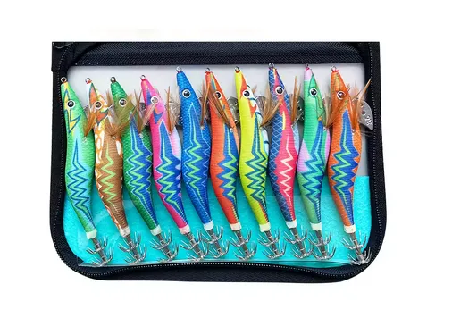

El Kit Rayo de 10 piezas destaca por el uso de materiales tradicionales como la madera, combinados con acabados modernos. Es una opción premium dentro del sector low cost, ideal para quienes buscan un señuelo con más "alma" y una navegación natural.

⚡ ¿Qué lo hace especial?
- ✔ Cuerpo de madera: Proporciona una flotabilidad y resistencia superiores al plástico ABS común.
- ✔ Micro bolas sonoras: Vibración extra para atraer depredadores en aguas turbias.
- ✔ Anzuelos Reforzados: Coronas dobles de alta penetración.
- ✔ Polivalencia: Efectivos tanto en mar como en embalses.
Especificaciones del Set
| Talla | Longitud / Peso |
|---|---|
| 2.5# | 10 cm / 11 g |
| 3.0# | 11,5 cm / 15 g |
| 3.5# | 13,5 cm / 21 g |
Veredicto Egis Low Cost
Si buscas salirte del típico plástico y probar la efectividad de la madera (muy apreciada por pescadores de la vieja escuela por su vibración), el Kit Rayo es la mejor puerta de entrada. Su revestimiento reflectante lo hace letal en días nublados.